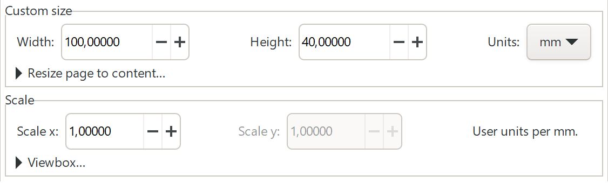
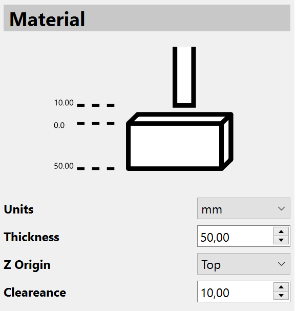
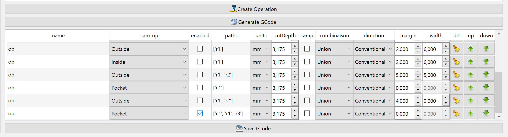

PyCut Tutorial
Introduction
Welcome to PyCut, a clone of jsCut, the excellent (at least for beginners) CAM, web-based programm, that takes as input SVG files and generates G-Code. So why this rewrite ?
PyCut aims to offer all the (minimalistics) features found in jsCut, with some small improvements. Hopefully you will find PyCut usefull when learning CNC and producing your first GCode files.
Starting point of PyCut are SVG files, your designs. In the following, we will use Inkscape to produce/explain SVG files and will shortly point out what has to be taken into consideration when creating "usable" SVG files for PyCut.
SVG Shapes and Paths
The SVG standard is large, and PyCut cannot simply read a svg file, display it, and allow the user to define cnc operations on the "shapes" defined inside the svg file. Of course, the goal of PyCut is to process as many svg data as possible.
The shapes inside a svg file are the following:
- <rect>
- <circle>
- <ellipse>
- <polygon>
- <line>
- <polyline>
The almighty
- <path>
can define in a single path definition many closed or opened paths, not necessarely related with each others.
Finally, the user will also want to process the strings written in the svg file:
- <text>
PyCut processes "paths" in order to calculate cnc tool paths, but thankfully it can read out of the box all kind of shapes, so there is no need to convert your svg files into "paths only" svgs.
PyCut will import these shapes/paths either as (shapely) "Polygon" (i.e. closed items) or as (shapely) "LineString" (i.e. opened items). Of course, svg <rect>, <circle>, <ellipse> and <polygon> are closed items, while <line> and <polyline> are opened items. When importing a <path>, things are more complicated, as a path can be composed of many subpaths (starting with [Mm]) and every subpath can be closed or not (ending with [Zz]). PyCut will try to import these paths definitions right, and in case of closed paths will also try to import them as shapely polygons "with holes" even if this concept does not really exist in SVG. Moreover PyCut will try to import a svg path as a valid (shapely) MultiPolygon in the shapely sense, or as a list of valid MultiPolygons if one single valid MultiPolygon is not possible. For example, the letters "i" or "j" are defined with a single svg path, defining two separates polygons, and it makes sense to consider these paths as a single shapely MultiPolygon entity. The letter "a" is a polygon with one hole, the letter "g" is a polygon with two holes (for some fonts). In the freetype vocabulary, "a" is formed by 2 "contours", "g" by three "contours".
There is one exception: PyCut cannot process yet <text> items. Fortunately, <text> items can to be converted into <path> items within
Inkscape, sonce they will be ignored by
PyCut. PyCut also comes with the utiilty
svgtext2svgpath.py which will also convert your <text> items. How to use it? just
call the svgtext2svgpath.py program which outputs in a new svg
the <text> items as <path> items. Copy/paste the result of a
<text> conversion into your own svg. A
successfull conversion will only occurs if the <text> item is simple enough: the text
"value" should not be splitted into several <tspan> items with different fonts. No <tspan> tag at all is also possible (and
simpler). IN PROGRESS.
All in all, if PyCut were to display text strings at the wrong positions, the user can always export the svg from Inkscape (and write PyCut a ticket).
Closed and opened paths
A path can be closed or not. This is not a matter if the first point is equal the the last point. A closed path or subpath contains the annotation "Z" or "z" at its end. Even if the first point of the path is equal to its last point, the path is only considered as closed with the ending "Z/z".
Warning: PyCut strongly relies on this annotation to decide if the path is closed or not. When not closed, "Pocket" operations will not be allowed for this path.
PyCut imports closed paths as shapely "Polygon" (infact "MultiPolygon"), while opened paths are imported as "LineString" (infact "MultiLineString").
Transformations
PyCut cannot handle "out of the box" svg datas where shapes/paths are defined with "transform" operations (translate, rotate etc.).
Nevertheless, it is possible to "resolve" the shapes transformations, as PyCut also comes with the utility svgresolver.py. The svgresolver.py program reads any svg data and outputs a new svg data with all transformations resolved, while keeping the"id"s right. IN PROGRESS: this utility should be integrated into PyCut so that the user can spare this step. Actually, this utility is found in the source code under the folder "utilities/svgresolver".
Svg Documents
Svg datas can be written with basic editors (vi, emacs etc..) or with real applications, like Inkscape. In both cases, the svg datas should contains (and Inkscape does it automatically) a viewBox as well as a width and an height. These 2 important attributes should be given with a unit, i.e "mm" or "in" as we are editing data in order to later generate gcode (with "mm" or "in" units). The height will be used later when creating GCode with the PyCut option "Zero Lower Left of Material" as reference.
Shapes and Paths"id"
In order to reference the shapes or paths, the shapes/paths must have their own "id", hopefully unique inside the svg document.
If the user has edited the svg "per hand", then he should not forget to give all shapes an unique id. If the user has created the svg with Inkscape, then "id"s are automatically given, but maybe the user will want to edit them and give them meaningfull name.
Writing Svg Files with Inkscape
With Inkscape, the first step is to specify the "Document size". Please choose as units "mm" or "in". You should also do this when creating a svg file with a text editor.
Writing Svg Files with a Text Editor
Sometimes it is easier to edit a svg file without a graphical app like Inkscape, but simply with a text editor.
This way, it is easy for example to define shapes in the <def> paragraph and reuse theses shapes in the main body of the svg file with the help of the <use> tag and some transformations. The utility svgresolver.py will have to be used.
Basic example
Opening the PyCut application
type in the console:
> python pycut.py -h
> python pycut.py [job]
Without argument, pycut opens itself. With argument, a previously saved job is opened.
For the very first time, start pycut without job.
Loading a SVG file
So import your svg into PyCut: The SVG content should be displayed in the central area.
Note: text is not displayed inside the PyCut svg viewer. It has to be converted as <path> in order to be further processed.
Creating a PyCut Job
Then create a new "job" : this is a kind of project file that stores for a given svg file all the CAM operations that the users has created, together with all others settings relevant when generating g-code. It can be created, saved and loaded again and modified - quite practical.
Creating CAM operations
Once an empty job is created and a svg file loaded, it is time to create some CAM operations: select 1 or more items in SVG window (they should turn beige) and click the button "Create Operation": a new operation in the operation table should appear.
Define the properties of the operation: the main one is the CAM operation type: "Pocket", "Engrave", "Inside" or "Outside". There are also the "Drill" and "Peck" operations, for the <circle> shapes whose diameter is smaller or equals to the tool diameter. The others options will be discussed later. Default values at this point should be Ok.
Create the GCode
Select (enable) one or more CAM operations in the operations table: the "geometry" of the operation(s) should turn black in the SVG viewer: this is (are) the region(s) of the material that wil be affected when cutting the material.
Then finish creating the G-Code by pressing the button "Generate GCode" above the operation table: the tool path(s) should appear(s) in green in the black regions.
The produced G-Code can be inspected in the "G code viewer" and the "G code Simulator" display areas.
You just have to save the G-Code and you're done. The gcode file should be named as the CAM operation name, or, in case of multiple operations enabled, as the project name, with ending "nc".
GUI Components
Svg Settings

user units scale
What is this? And why is it disabled and set to 1? Let's take an example: in Inkscape, the user would set the document's size to 100x40 mm, supposedly the size of the material to work on. Inkscape automatically sets the user units scale to 1. Note that the user units are not "px" or whatever. This means, 1 "user unit" is equal to 1 mm (and the viewbox is "0 0 100 40" while width="100mm" and height="40mm")
Of course when editing the svg (in Inkscape or in a text editor), the user is only concerned with the user units : he draws a rectangle of size 20x30 at the location 10x10. The users may simply even not be aware of this fact. When choosing mm, conversion from user units to mm is absolutely straightforward as, as said, the user units scale is 1 per default .
Let's consider now the case where the user switches to inches for the document size. The size of the document becomes then 3,93701x1,57480 inches (yes, 100 / 25.4 is 3.93701). Note that Inkscape automatically change the user units scale to 25.4. Because of this, the view box remains at "0 0 100 40". That way, a rectangle filling the full document size is still 100x40.

Filling a box half the size of the document is 50x20, right, but what are real physical dimensions of that box ? The user would have to steadily calculate from fancy user units (ex: 50x20) in inches
But why would a user use inches and work with user units scale factor 25.4 (leading infact to work in mm) ? The user can set the user units scale factor to 1. The effect of this is that now, in order to fill the whole document with a rectangle, the rectangle has to be of the size user unit size of 3.93701x1.57480.
Of course the size of the material is certainly not 3.93701x1.57480 inches, but something like 5x3 inches: an human readable size. The user knows that he has to draw a rectangle inside the material of size let say 1.5x1.2 inches. And these dimensions are the ones that are effectively saved in the svg document. So the user units are exactly the same as the "physical units" when choosing a scale of 1.
Now how can PyCut handles these settings? PyCut only works with the user units. PyCut will calculate toolpaths in the same order of magnitude of the user units values of the svg. If you choose "mm" for the gcode output, you would have set your svg document size in "mm", and the user unit scale to 1. Because of this, the gcode X,Y and Z values are the same as the one of the paths values.
If you choose "in" for the gcode output, then certainly you have set your svg document size in "in", and the with user unit scale equals to 1,no conversion is either needed.
Note that this scale factor is not explicitely given in the svg file. It is calculated from the ratio viewbox / width. It is eventually the task of the user to know what is the user units scale value, and, theorically, to set it in PyCut. But my opinion is, working with a user unit scal of 1 is preferably.
I personnaly stick to svg document units in "mm" with user units scale factor of 1, and output my gcode in mm. No confusion!
Warning: The user could use "mm", and set a scale factor of 10 or whatever, but it certainly makes no sense.
I apologize for the ones who would like to work with user units scale not equals to 1.
The further PyCut Gcode Units setting is not only a flag to set the code G20 (inches) or G21 (mm) inside the gcode file: it also allows the proper conversion of the tool diameter physical size (inch or mm) in user units.
The rule is:
- Gcode Units in "mm": tool diameter is transformed to mm - the same as the user units
- Gcode Units in "in": tool diameter is transformed to inch - the same as the user units
Warning: PyCut assumes that for "mm" or "in", the user unit scale factor is always 1 .
Tool

Tabs
It's easy to define tabs with PyCut: just click the button "Create Tab" and a red circle is created in the svg viewer, of radius 5 and position (10,10). The user can drag 'n drop it from the svg viewer, or set its size/postion in the tab table. Yes tabs, for simplicity, are circle. To be effective, the tabs have to be enabled and of course placed somewhere on the generated toolpaths. The height of the tabs is shared by all tabs. They are ignored for Pocket operations.

Warning: Tabs shall not overlap with other tabs (at least the enabled ones).
You can check the Gcode generation in the viewer/simulator if everythings is Ok.
Material
The Operations "Cut Depth" should not be larger than the material thickness.
Warning: Actually no check is performed on the values given here. The depth cut of the operations should not exceed this thickness, or only exceeding it with a minimal value, only to be sure to cut through..
Warning: The clearance is written in the produced g-code. Thus the user should be sure it does not exceed the physical possibilities of the machine when travelling in the z-axis, especially for small machine like the 1419 or 1310.
Curve to Line Conversion
If your design contain curves (svg "arcs" or "bezier" curves), they have to be discretized in small segments.

The 2 following parameters allow to specified how fine the curve discretization will be:
- Minimun number of segments
- Minimum Segments length
GCode Conversion
The starting location of a milling operation is given by the initial location in the GCode. Per default, PyCut gives as starting point the (0,0) coordinates of the SVG file, which is located at the top-left of the material. The SVG conventions are opposite to GCode convention considering the Y direction.
So the GCode generation will have to invert the direction of the Y axis coordinates. But still the reference is the top-left postion.
It is possible to change the reference location of the generated GCode
- Top-Left location of the material
- Bottom-Left location of the material
- Bottom-Left location of the Gcode area
- Center of the Gcode area
Note that these 4 buttons act as radio buttons.
These four references points set the XOffset and YOffset of the GCode calculation. After a GCode generation, it is still possible to modify the XOffset and YOffset to fit at best how to user wants to have the origin be located with the help of the 2 spin boxes.
And further:
- Flip X/Y
In the generated G Code, X and Y are switched.This can be helpfull, for example in the case your CNC is the "1419" model (mine!) which is not as large as deep. So this option allows to carve something like 16x10 cm without -painfully- rotating all items in the source svg.
In case of Bottom-Left location of the material, the Y size of the material is extracted form the svg file: the svg "height" attribute.
GCode Generation
Some useful options can be set up:
- Return at initial location at end of the Job
- Spindle Start/Stop (M3/M5 codes)
- M2 code
Create Operations
This is where the user defined its cam operations, thus this is where the action takes place.
First one or more item(s) have to be selected in the svgviewer, click on "Create Operation" and a default operation is created. When more than one item has been selected, the user can perform logical operations on this set of item
- diff
- intersect
- union
- xor
When "enabling" this op, the resulting geometry will be displayed ion the svgviewer
Note: The geometry is highlighted in red. The highlight color can be setup in the settings dialog, or from the menu bar (these 3 strangle colored buttons). It is useful when the color of a svg path is already red.
Then the cam operation can be chosen
- pocket - only for closed shapes
- inside
- outside
- engrave
- drill ONLY for circle shapes
- peck ONLY for circle shape
For opened paths, the pocket/drill/peck operations are not available.
NEW: for circles, "drill" and "peck" operations are available. Infact, for a pocket operation with a circle of diameter smaller than the cutter diameter, no tool path would be generated.In case of the circle diameter is smaller or equal than the cutter diameter, in order to have toolpath, "drill" or "peck" is the way to go.
In order to generate G code, enable one or many operations and click on "Generate G code". PyCut will try to do its best... The resulting G code is displayed in the G code viewer and G code simulator.
Finally, clicking on "Save G code" will produce a valid G code file. Candle can be used to send the G code to your machine. Have fun...
GCode DressUp (TODO)
DogBones
Warning: I am a CAM beginner, so for sure my solution is sub-optimal.
When milling a pocket or a contour, the cutter is not able to mill into concaves angles (yes the cutter is round).
To remedy to this, you can
- modify your design
- fix the resulting GCode so that the angles are milled as you wish
- I do not know yer another method (I'm a beginner)
The first option seems to me to be unacceptable, because you end up modifying your design (in function of the cutter diameter).
The second one means you have to modify "per hand" the produced GCode. But how allowing to modify the Gcode "per hand" in a repeatable manner? here is my proposed method:
- Generate the Gcode first.
- Identify the locations(s) of the Gcode where the problem occurs.
- Write "fixup" GCode "blocks" that will be inserted into the generated GCode at the right places
Sure, if there are 1000 corners, it will be unpracticable.
Example (strategy "1" on the left, strategy "2" on the right):
We see that the strategy "1" removes far less material than the strategy "2".
At a given GCode "instruction" which is exactly at a corner (there are certainly more than one line with such a pattern if the total cut depth is higher than the pass depth)
G1 X10.0000 Y20.0000 we want to insert a GCode block
G1 X09.0000 Y21.0000 ; goes 1mm top left
G1 X11.0000 Y20.0000 ; and backOf course we need to inform the Gcode generator that he has to take into account this fixup, thus inserting the "block" each time a line wwith such a pattern is produced. It is up to the user to give the right fixups. For each "problem zone" (corner) one block.
Of course this fixup has to be saved in the project, and to be applied only for the desired operations. In the job file at the operation definition:
{
"name": "op_contour",
"type": "outside",
"cut_depth": 3.175,
"paths": [
"contour"
],
"ramp_plunge": false,
"combinaison": "Union",
"direction": "Conventional",
"units": "mm",
"margin": 0.0,
"width": 0.0,
"gcode-fixups":[
{"G1 X10.0000 Y20.0000" : [
"; start fixup",
"G1 X11.0000 Y19.0000 ; goes 1mm top left" ,
"G1 X11.0000 Y20.0000 ; and back",
"; end fixup""]
},
{"G1 X15.0000 Y20.0000" : [
"; start fixup",
"G1 X16.0000 Y21.0000 ; goes 1mm top right",
"G1 X15.0000 Y20.0000 ; and back",
"; end fixup"
]
}
}
}Note that the GCode generation is function, among others, of the "GCodeConversion" settings and cutter diameter.
"GCodeConversion": {
"units": "mm",
"flip_xy": false,
"x_offset": -10.08,
"y_offset": 29.66,
"xy_reference": "ZERO_LOWER_LEFT_OF_OP"
},so changing the xy_reference or other parameters that influence
the GCode generation makes the fixups completely obsolete.
Example-1: with a cutter of diameter 3mm (radius 1.5 mm) a
corner at [8.5, 21.5] is not milled as right corner. The cutter goes to
[10.0, 20.0] from the bottom right and thus there is a gap of
offset = sqrt(1.5*1.5 + 1.5*1.5) - 1.5 = 0.622
The direction of the fixup is in these case "NE" so the orientation of the corner "a" is 3Pi/4.
dx = offset * cos(a) = -0.44
dy = offset * sin(a) = 0.44
until the corner.
G1 X10.0000 Y20.0000So we write the fixup
G1 X09.5600 Y20.4400 ; goes 0.44 mm top left
; it could be: G1 X10.0000 Y21.5000 ; goes 1.5mm top
; it could be: G1 X08.5000 Y20.0000 ; goes 1.5mm left
G1 X10.0000 Y20.0000 ; and backExample-2: with a cutter of diameter 3mm (radius 1.5 mm) a
corner at [16.5, 21.5] is not milled as right corner. The cutter goes to
[15.0, 20.0] from the bottom left and thus there is a gap of
offset = sqrt(1.5*1.5 + 1.5*1.5) - 1.5 = 0.622
The direction of the fixup is in these case "NW" so the orientation of the corner "a" is Pi/4.
dx = offset * cos(a) = 0.44
dy = offset * sin(a) = 0.44
until the corner.
G1 X15.0000 Y20.0000So we write the fixup
G1 X15.4400 Y20.4400 ; goes 0.44 mm top right
; it could be: G1 X15.0000 Y21.5000 ; goes 1.5 mm top
; it could be: G1 X16.5000 Y20.0000 ; goes 1.5 mm right
G1 X15.0000 Y20.0000 ; and backEasy!
We see: the fixup dx and dy = 0.44 mm are a little less than a third of the cutter diameter 1.5 mm.
General case / automatic fixups
The angle (size of the corner) that the toolpath makes at each point is calculated with
TODO
and the direction of the corner is
TODO
So we can calculate the offset as well as the orientation "a" of the corner. Theorically a fixup is needed as soon as a path "angle" is smaller than 180 degrees. It is up the the user to decide at which threshold fixups shouls be performed. Value of Pi/2 seems acceptable, or maybe Pi/4. So fixups will be perform only for angles smaller than this threshold.
PyCut GCode Dressup GUI
In the GCode Viewer/GCode simulator, lines corresponding to fixups (comprised between the comment lines
; start fixupand
; end fixupwill have a blue background.
In the operations table, the icon "fixups" will have following background:
- no background:no fixups given at all
- blue: no GCode yet produced, so not able to determine if the given fixups are effective or not
- green: fixups are given and "effective" (all given patterns are found in the GCode)
- orange: some fixups are "effective", other are not effective
- red: all fixups seem to be obsolete
And clicking on the icon opens a JSON editor to edit the fixups. In this editor, there will be some "wizards" to help writing the fixup, so that no math will be asked for the user (especially usefull if the corner is not a right corner, as the direction as well as the length of the G1 instruction have to be determined).
After having edited the fixups, re-run the GCode generation and observe in the GCode Viewer/GCode simulator if the fixups have been taken into account.
Appendix-1: SVG Editors
It seems there are plenty of free SVG editors around there. Well, let me share my opinion about a few of them...
I will simply try to edit and save a closed path composed of lines, arcs and bezier curves similar to what I've edited per hand: about 20 segments representing my workpiece, with mixed straight lines, arcs and bezier curves.
I know that every app has its own learning curve, but I try use the apps without investing to much time. This means, I act as a very basic user. If I do not succeed, this is due in part to my inexperience, but also in part to the difficulty of use of the app.
Free software
Inkscape
To me much too complicated. I "hate" the fact that the circles are given from their "bounding box", not from the center with radius (ok it is possible, but I have always to figure out how). Editing paths is far to complicated (to me) and thus too difficult. The saved SVG data is full of inkscape/sodipodi namespaces stuff, which I dislike a lot in a SVG file. I would rather prefer a raw SVG with only the minimal and certainly not all these extra namespace stuff. Removing per hand these extra stuff destroy the Inkscape project settings.
Yeappy! To obtain a SVG data free of sodipodi/inkscape namespace stuff, you have to "export" your SVG data (your "project" file) as SVG!
Editing points coordinates "per hand" is nearly impossible as the coordinates are only accessible from the "d" string, which is not really human readable. Here is an example of a polyline with 8 points:
M 5.9999998,35.999999 10,33 l 5,2.999999 -1,-4 h 7 V 41 H 12 L 8.9999999,38.999998BTW, note how absolute and relative keywords are given in the path. Question: what are the coordinates of the fifth point?
Concatening segments to form a single path doesn't even work as expected. The simple task consisting of concatenating a polyline and a bezier curve -in this order- (which are joined) seems not to work! There is the "combine" command, but the result is a single path (ok... ) containing 2 subpaths (with "M"), which is not Ok, the first one beeing the bezier curve and the second one beeing the polyline, this means in reversed order. Sure, with "M"s everywhere, the ordering is not that important, is it! A very desapointing implementation from Inkscape I would say. Conclusion: unusable if you want to generate complex paths.
PS: There is the "Draw Bezier and straight line tool" with mode "Create regular Bezier path" but after many many hours of trial (despite YouTube tutorials) I did not succeed to use it properly. Is it just me ? With it you cannot anyway mix your path with an arc curve.
QCAD
It reads/writes dxf files, can export them as SVG. Unfortunately the SVG export comes with extra rubbish for the trial version (nice!). Forget the free version. Trial version allows you to test it about 15 min, then it closes itself (you can restart). So in fifteen minutes I could observe that editing polylines is possible, as well as Arcs and Cubic Bezier curves (did not find quadratic bezier curves). These Cubic Bezier curves are exported right in the SVG export. Unfortunately (again), when concatening lines/polylines with these cubic bezier curves in order to form a whole path, they are transformed into Arcs (why ?) or Lines (why?), and so the SVG export. Conclusion: completely unusable.
LibreCAD ****NEARLY GOOD****
It is (was) a fork of QCAD (2011). It looks a lot like QCAD, but the (my) first feeling is that the user interface seems better. The SVG export is exactly what one would expect (well , nearly). There is minimal extra LibreCAD namespace stuff in the output. Do not know yet how to assign ids to the entities (bad). You only have to take care that in the SVG format y = 0 is the top of the drawing, so coordinates in the SVG file are inverted from coordinates in the app (which is normal). The y = 0 correspond to the highest coordinate of your items in the canvas (Note: in QCAD the coordinates are the same and there is a global svg transform="scale(1,-1)". The viewBox is calculated accordingly. It would be nice to have this option in LibreCAD).
Splines through 3 points correspond to bezier quadratic curves, while splines through 4 or more points are not cubic bezier curves but only sequence of quadratic curves (it seems possible! is it ? they really look to be smooth of order 3!).
There is another splines button (strange!) where it is possible to indicate which degree (1, 2 or 3) the spline has to be. And for 2 and 3 these are bezier quadratic or cubic curves with control points entered from the UI. Setting for the degree is in the main menu bar (this is LibreCAD concept, but not so straight to be seen if one not knows).
Editing polylines/arcs/quad bezier and concatenate them together ("create polyline from existing segments") works "half", (SVG output is a single <path> entity) but here there is a bug or let's say a missing feature: one cannot concatenate polylines/arcs with beziers/splines.
Snap stuff is perfect, with many clear and practical snap options (correction: nearly perfect: cannot snap on bezier curves)
So this is a real pity that LibreCAD does not perform the concatenation of lines/arcs with beziers/splines into a single SVG path, it is fixable per hand in the output, but why the hell is LibreCAD not able to perform concatenation of lines/arcs with splines?
Conclusion: A good SVG "path" generator/exporter that is unfortunately not completely finished.
SolveSpace ****BEST****
Ever heard of it? A parametric system as known from the 3D modellers. Incredible! The GUI looks like from the beginning of the '80s, but usability/features more than top.
SVG export perfect (well, nearly perfect) . The construction constraints can also be exported, so there are a lot of "paths" in the svg export, even if you have drawn only 1 path. Unfortunately, you cannot give your paths some ids. It would be nice if these "contraints" paths could be grouped into their own group in order to isolated them from the real paths. There are only cubic bezier curves, quadratic bezier curves are unfortunately missing (not sure), but one can avoid these in a design. The SVG closed path "Z" is also missing (have submitted a patch!).
Conclusion: The best SVG "path" generator/exporter I have found so far.
Note: in 2023, a Blender add-on called CAD Sketcher is in development, which utilize the SolveSpace library for sketching. Maybe the user interface will be there even better.
Fusion 360
The free version is also incredible. The parametric "sketcher" is beautiful. There is no SVG export per default, but it seems there is an add-on that costs about 15$, but I did not buy/try it because I gave up in the meanwhile looking for SVG editor... This add-on is certainly awesome.
XFig
My beloved drawing editor during my youth! Completely outdated, but still the best! Unfortunately the SVG export is deficient. There are Bezier curves (really?) i.e. splines with control points (it looks like Bezier) but the SVG export outputs them as polylines (with many points). Conclusion: unusable
Online editors:
There are plenty of them, but they all seem to be meant for painting, not for CAD (a little like Inkscape). Please correct me if I am wrong.
Others:
I do not mention them because the list would be too long... but I did not find something I was pleased of.
Non-free software
DesignCAD
The free version has the same capabilities as the full version, excepted the exports to other formats. Bad!
TurboCAD
Only a 15 days trial version - TO SEE
Solid Edge 2D Drafting (Siemens)
The 3.8 GB big app from Siemens is free of charge. It is incredible software. But It seems there is no SVG export at all. "Schade".
Draftsight 2D (Dassault)
Only a 30 days trial version - TO SEE. Oh my God! There is this "Power Tool" named "2D G-Code generator"! Forget PyCutl! (or not) . SVG export seems to be more meant as a picture for display only purpose.
What else?
It is cumbersome to try to find a decent SVG editor, or at least a CAD program with ease of use and decent SVG export. LibreCAD would be simply very good if it could support spline "concatenation" into a path (keeping dxf as input data alongside svg as export data is not a problem). Does anyone knows one? (I mean, if he/she **really** tried it and can recommand it). Finally discovered SolveSpace which is simply great.
Conclusion
The fact that it is so difficult to find an acceptable SVG path "writer" program let me wonder why it is the case. And why does only SolveSpace perform the task correctly? Why such a capable App like LibreCAD fails for this task? Well in case of LibreCAD, it cannot concatenate splines with lines, so does the export.
The primary usage of SVG is displaying images, not being a format for (CAM) input. So why bother exporting it right. The svg path definition is too complicated, "nobody" want to parse it, and thus in return is interested in exporting it right. The apps which theorytically could use the SVG path as import (as SolveSpace could -let's write a patch!-) export them then correctly. But who else would want to import svg paths? Response: the applications that do not want to use an other (maybe more complicated) format, because yes, SVG can be indeed simple.
The SVG format has the merit to exist, sure, and in some points is very practical (that's why I use it), even when not "optimal". But concerning the svg path definition, what is the point for example of allowing paths with sub-paths? maybe because the SVG format completely ignores the concept of "multiline"/"multipolygon" etc. Polygons have no "interiors" so they must be defined as such in a path composed of 2 or more subpaths for this purpose.
All in all very desapointing, excepted SolveSpace!
Per hand
Finally my prefered method! Per hand you can also write items in the
<def> section, and use these items repeatidly with
transformations with the <use> tag. My utility
svgresolver.py then transforms this svg file into another one,
usable for PyCut. Not the perfect toolchain I admit, but well my svgs
are not that complicated. You have to understand how to write an
arc/bezier curve per hand, it is not that difficult. And yours svgs are then
"clean".